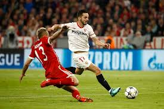

Informações Champions League
Página Inicial
Resultados anterioes
Estatísticas-Jogadores
Maiores Campeões
CAMPEONES! REAL MADRID VENCE O LIVERPOOL E SE CONSAGRA TRICAMPEÃO

Pela sétima vez seguida, o Bayern de Munich chega as Semi-Finais
"O milagre" Roma 3x0 - Quartas de finais
Um sonho destruído: Salah se machuca em lance polêmico na final.
Reveja as falhas bizarra de Karius, goleiro do Liverpool.
Comentário de Cristiano Ronaldo logo após a final gera dúvida a sua permanência no Real.
Reveja a comemoração do Real Madrid no Bernabeu
Após 22 anos, Iniesta se despede do Barcelona